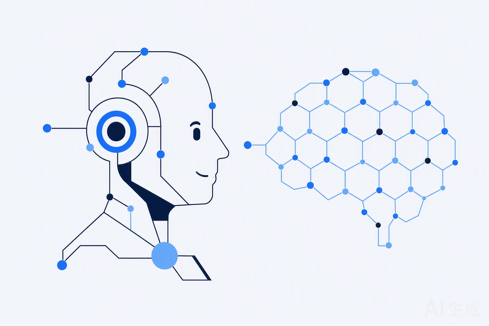
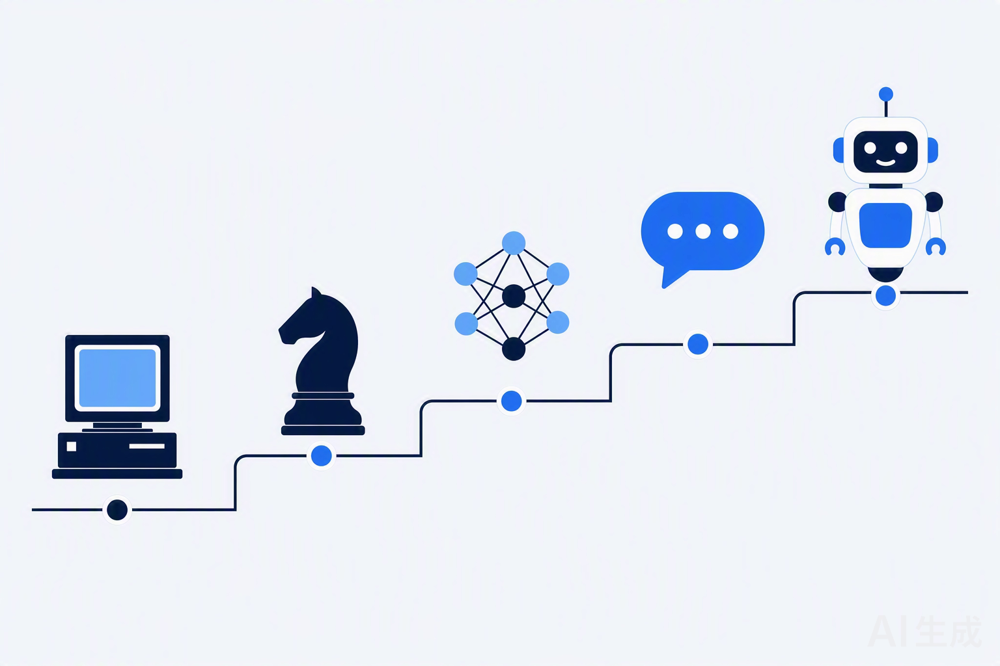
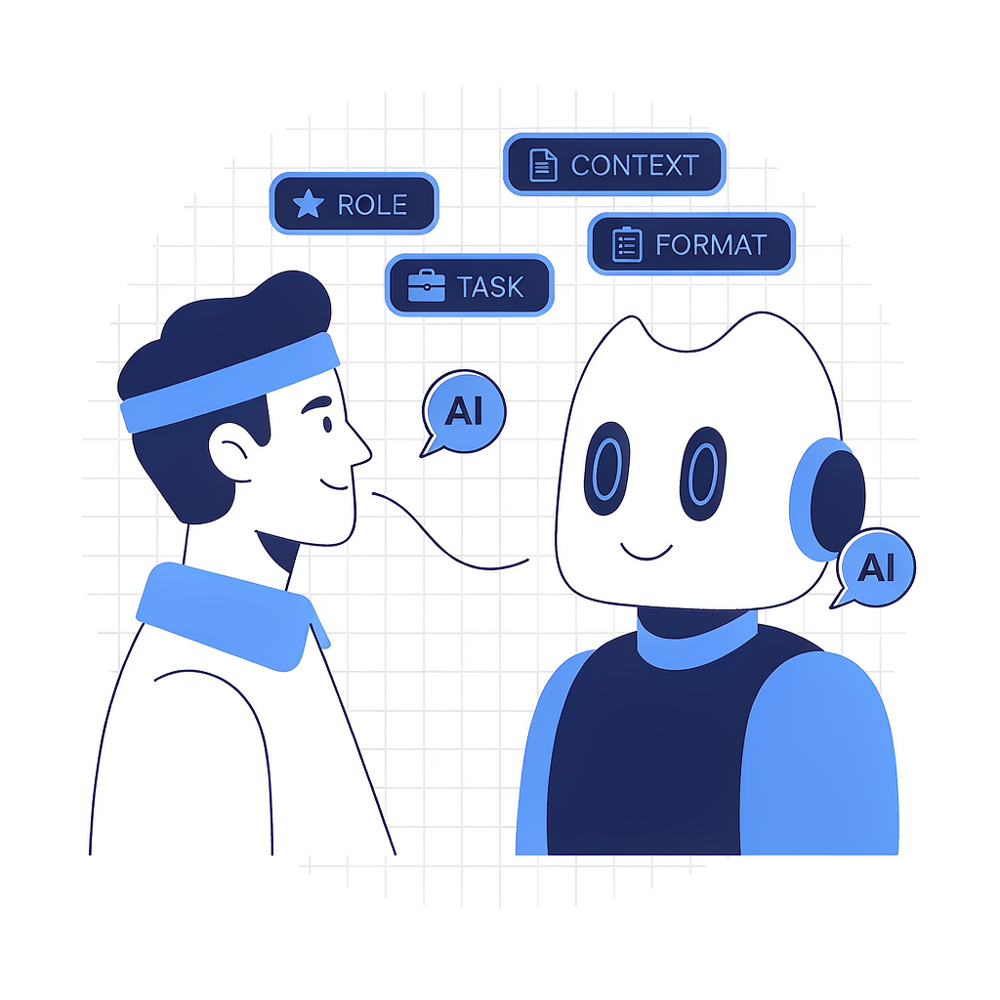
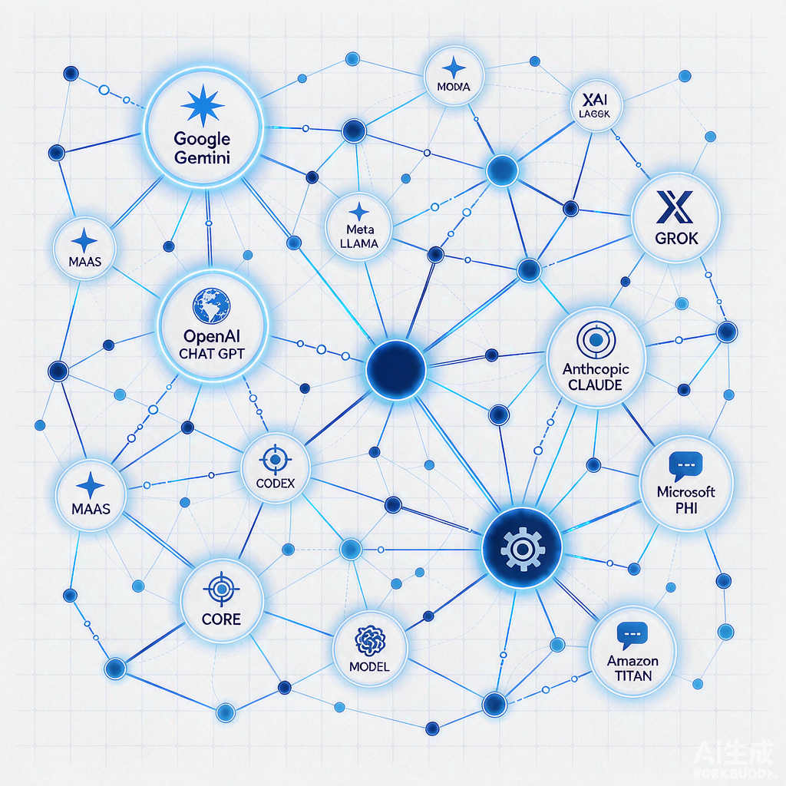

从「什么是 AI」到「如何用 AI 高效工作」，一页完成：概念认知、76 年发展时间线、公司与模型图谱（附官网链接）、提示词模板、视频与博主推荐，最后用「难点与测验」检验学习成果。
用最通俗的方式理解人工智能：它能做什么、不能做什么，和我们的日常工作有什么关系。
人工智能（Artificial Intelligence，AI）：让机器完成「通常需要人类智能才能完成」的任务——理解语言、识别图像、推理决策、生成内容。它不是一项单一技术，而是一个不断演进的技术族群：从早期的规则系统，到机器学习，再到今天的深度学习和大模型。
一句话理解今天的主流 AI：它不是「查数据库」，而是基于海量数据学到的统计规律，对「下一个最合适的词 / 像素 / 动作」做预测。预测足够好，看起来就像「智能」。

只擅长特定任务的 AI：下棋、翻译、推荐、画图。我们今天用到的所有 AI 都属于这一类，包括 ChatGPT 和大模型——强大但没有自我意识。
假想中能像人一样跨领域学习、推理、解决任意问题的通用智能。目前仍是研究与争论的目标，定义和实现时间分歧很大。
假想中全面超越人类智能的形态，属于哲学与前瞻讨论范畴，也是 AI 安全与治理研究关注的长期议题。
AI、机器学习、深度学习、大模型常被混用，其实是层层包含的关系，从外到内：
互联网文本、图片、视频、代码是训练大模型的原料，规模与质量直接决定能力上限。
训练一次前沿大模型需数千张 GPU/加速卡连续工作数周，这也是英伟达成为 AI 核心供应商的原因。
Transformer 架构 + 预训练 + 对齐微调是当前「标准配方」，算法创新（MoE、推理链）持续降本增效。
用互联网上万亿级别的文字、代码、书籍作为学习材料。
76 年三起两落：两次寒冬、三次浪潮。点击下方标签，按时期筛选 16 个关键节点。

从 1950 年图灵提出「机器能思考吗」，到 2026 年每个人手机里的智能助手——AI 并非一路高歌，而是经历了「三起两落」：两次因为过度承诺、技术跟不上预期而陷入寒冬，又两次因为技术与条件的成熟而重新崛起。
看懂这条历史曲线，你就能理解：今天这轮大模型浪潮，是数据、算力、算法三要素熬了半个多世纪后同时成熟的必然结果。
艾伦·图灵发表《计算机器与智能》，提出「机器能思考吗」与图灵测试。
「人工智能」一词首次提出，AI 正式成为一门学科。
第一个聊天程序 ELIZA 问世，人类开始幻想「会说话的机器」。
早期过度承诺无法兑现，经费大幅削减，研究陷入低谷。
把专家知识写成规则卖给企业，AI 首次大规模落地。
规则维护成本失控，市场崩盘，行业再次遇冷。
IBM 深蓝击败国际象棋世界冠军卡斯帕罗夫。
AlexNet 在图像识别竞赛中大幅领先，「大数据 + 神经网络 + GPU」被验证。
DeepMind 的 AlphaGo 战胜围棋世界冠军李世石。
Google 论文《Attention Is All You Need》发表，成为所有大模型的「祖传引擎」。
1750 亿参数，验证「规模即能力」，提示词工程的理论起点。
上线 2 个月用户破亿，大模型时代正式开启。
多模态与长上下文能力爆发，AI 进入日常工作流。
原生多模态、视频生成、推理模型接连发布。
国产模型全球出圈，推理与 Agent 能力成为竞争焦点。
智能体从「会聊天」进化到「会干活」，AI 成为真正的生产力工具。
※ 时间分期为主流科技史叙述的常见口径，个别事件的归类存在不同说法。
同一个 AI，有人觉得惊艳、有人觉得鸡肋，差别大多在「怎么提需求」。

同样一个 AI，有人用得惊艳、有人觉得鸡肋，差距往往就在「怎么提需求」。提示词（Prompt）不是玄学，而是一套「把话说清楚」的结构化方法：把角色、任务、背景、格式讲明白，AI 的产出质量会明显提升。
下面这套方法，可以直接套用到你真实的工作里。
让 AI 扮演谁，如「你是一位资深电商文案」。
具体要做什么，如「写 3 条朋友圈推广文案」。
必要的上下文：产品信息、目标人群、语气要求。
输出长什么样：表格 / 列表 / 字数限制 / 语言。
把【】替换成你的内容即可，右上角按钮一键复制：
练习入口：打开公司内部的「小A」，用上面的模板改造一个你本周真实的工作任务——练一遍，胜过读十篇教程。
公司做模型，模型变产品。认识 AI 领域的重要玩家，点击卡片直达官网。
合规提示：了解外部厂商用于建立行业认知；涉及公司数据的工作场景，请一律使用公司内部工具「小A」。
公司发布模型，模型以产品形态提供服务。每张卡片都可一键跳转到官方体验入口。
模型是 AI 能力的「发动机」。不同公司基于自家的技术路线与数据，训练出各有侧重的模型，再以产品形态（网页、App、API）提供服务。了解主流模型的长板，能帮你更高效地「对症下药」。
下方卡片可按海外 / 国内 / 开源筛选，每张都能一键跳转到官方体验入口。

12 个高频术语：是什么、为什么重要、一句话记住。支持搜索过滤，点击条目展开。
看不进去文字？这些视频和创作者能把同样的知识讲得生动得多。全部为外部公开资源，点击跳转。
看视频入门：原理类首推 Karpathy 的 1 小时大模型入门和 3Blue1Brown 的直觉动画；中文用户可以直接看李沐的论文精读和李宏毅的完整课程。每天 2 分钟刷 Two Minute Papers，跟进前沿不费劲。
跟博主保持同步：行业动态看机器之心与量子位，海外一手消息看宝玉的翻译点评，工具玩法看少数派。
提示：以上均为外部公开资源，需互联网访问；部分海外平台内容建议优先选择带官方中文字幕的版本。
新手最容易踩的 5 个坑，看懂它们能少走很多弯路；下方 8 题小测验即时检验你是否真的掌握。
大模型本质是「预测下一个词」，不是查数据库。重要数据、人名、引文务必让它给出来源，或人工复核。
没写清角色、背景、任务、格式，AI 只能瞎猜。套用四要素模板，质量立刻不一样。
推理、计算、长文档用推理模型（DeepSeek-R1、GPT o 系列）；公司数据一律走「小A」，合规又读得到内部资料。
输出又长又散。拆成多轮：先要框架、再逐段扩写、最后润色，效果更可控。
AI 是「天才实习生」，不是权威。关键决策、对外口径、数据结论，一定保留人工判断。
第一版不满意，直接说“更口语 / 缩短一半”，AI 会立刻改。多轮对话远胜重开新窗口。
全部作答后点击提交，即时出分并查看每题解析。